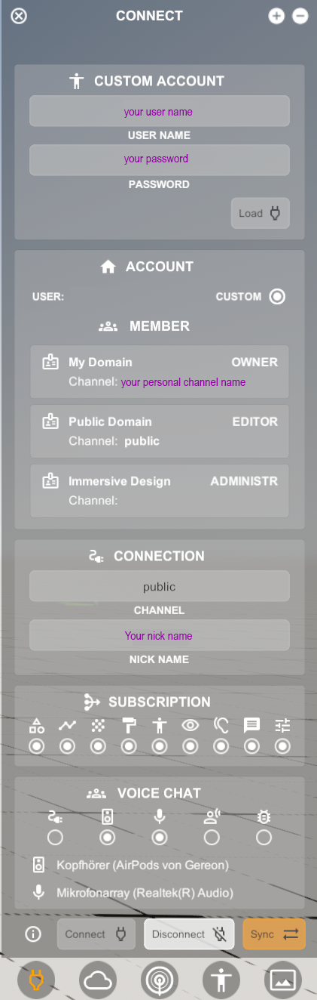
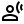
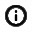

{kind=link}
1. Connect Menu#
This menu is for connecting to a channel, logging into your custom account, subscribing to specific types of content and for connecting to the voice chat. Logging into your RADii account gives you access to your personal channel and potentially your group channels, with more live and permanent storage.
{kind=link}
1. Custom Account from Radii.info
the
login menucan be opened by pressing thecustom buttonin the ACCOUNT sectiongives access to your personal channel with more storage as well as all other group channels the account is associated with
group channels can be hosted privately and can have a custom storage level
A login is necessary if you want to edit items in cooperation with others
2. Account
Lists all channels you have access to and your rights (owner/editor/administrator)
My domain- is your personal domain that has your username as channel addressPublic Domain- everyone has access to the public channelGroup channel- if you are associated with a group this is where
3. Connection
Channel- input the channel address, subchannels can be accessed by adding them separated by a point. Example: channelname.subchannelnameNickname- displayed for others on the server
Note:
If you type in a channel name that does not exist one by that name is creates and you will be able to connect nonetheless, this means that in case of a typo you will not be notified.
4. Subscription
The types of data you receive: geometry, lines, point-clouds, textures, other players, views, messages, settings
5. Voice Chat
Join the voice chat |
|
Output |
|
Input |
|
|  | Positional sound |
Echo (for testing) |
Output Device: Taken from the system standard and can be changed in the settings Input Device: Taken from the system standard and can be changed in the settings
Note: As of now, Positional sound and non-Positional sound work as two isolated voice chats.
To hear each other, all parties have to be in the same state.
6. Server
|  | I-Info menu with version number, RADii.info, Privacy Policy and Terms and Conditions |
Connect |
Press connect after setting the channel name to join a channel |
Disconnect |
To exit a channel |
Sync |
Synchronizes with a channel, to receive all content that was previously sent |
Video